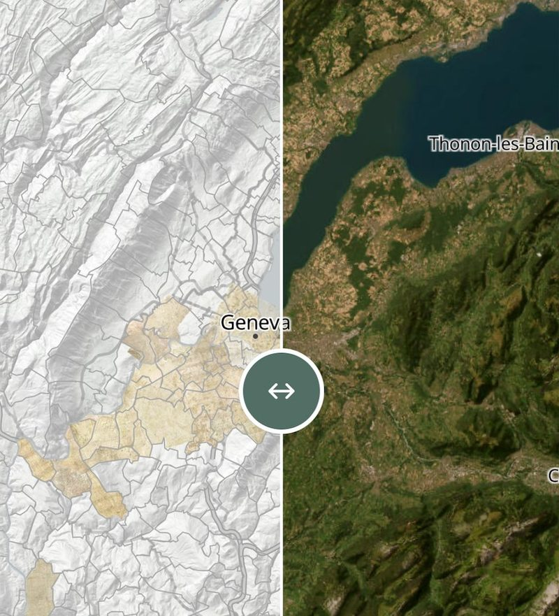
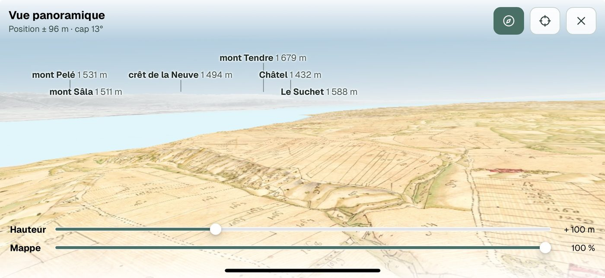
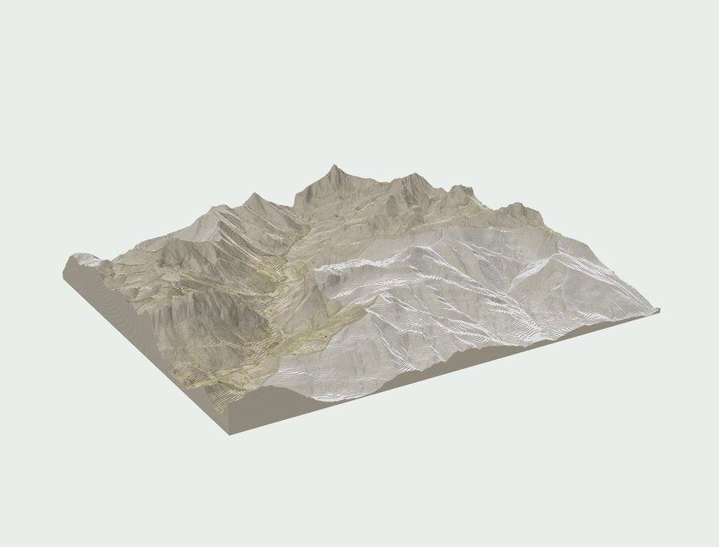
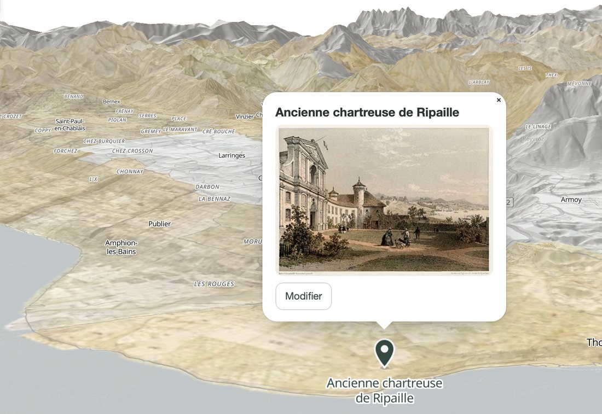
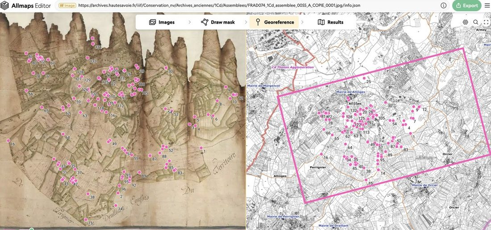
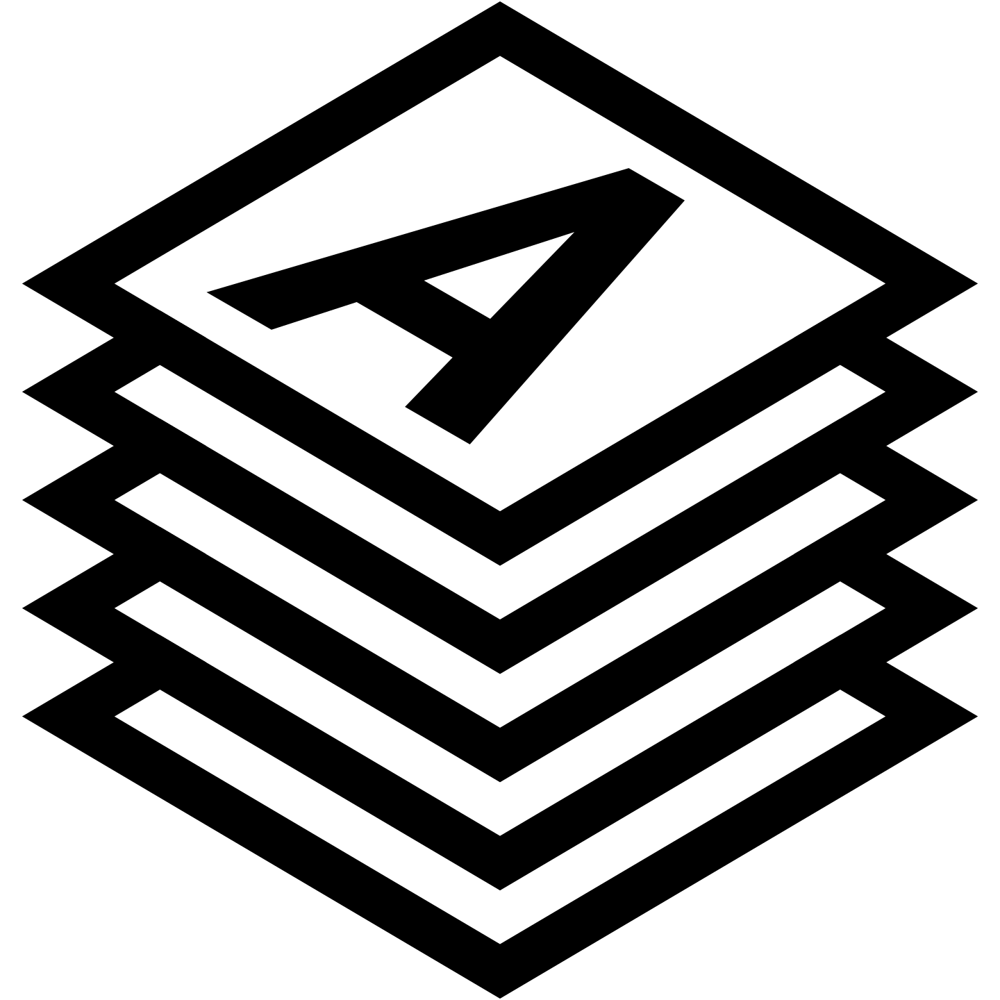

Comparer
Hier et aujourd'hui, côte à côte
Un curseur sépare deux fonds au choix : mappe, satellite, orthophoto de 1932 ou des années 1950, plan Micheli.
Les plans cadastraux de 1730 posés sur le territoire d'aujourd'hui, à explorer en 3D, sur le terrain ou depuis chez soi.

Au XVIIIᵉ siècle, le royaume de Sardaigne fait lever un cadastre de chaque paroisse : maisons, champs, vignes, chemins, propriétaires. Ces mappes dorment aux archives de Haute-Savoie et de Genève.
Une à une, elles sont calées sur le cadastre actuel, découpées, assemblées puis publiées sur une carte en ligne. On peut ainsi poser le territoire de 1730 sur celui d'aujourd'hui, parcelle par parcelle.

Une carte web qui marche aussi sur téléphone et s'ajoute à l'écran d'accueil comme une application.

Un curseur sépare deux fonds au choix : mappe, satellite, orthophoto de 1932 ou des années 1950, plan Micheli.

Vue panoramique avec le nom et l'altitude des sommets, hauteur réglable, transparence de la mappe à la demande.

La géolocalisation place le point bleu sur la mappe. On se promène dans le village d'aujourd'hui en lisant celui d'hier.

Export PDF, maquette 3D à partager, fichiers pour découpe laser ou impression 3D.

Cote d'archives, lieu de conservation, lien vers la numérisation et indice de précision du géoréférencement.

Bâti, parcelles, recensement architectural, adresses : les données publiques s'affichent directement sur la mappe.
Chacun peut enrichir la carte : ajouter une annotation sur un lieu, ou améliorer le calage d'une mappe.



Géoréférencer dans Allmaps, l'outil libre de géoréférencement en ligne.